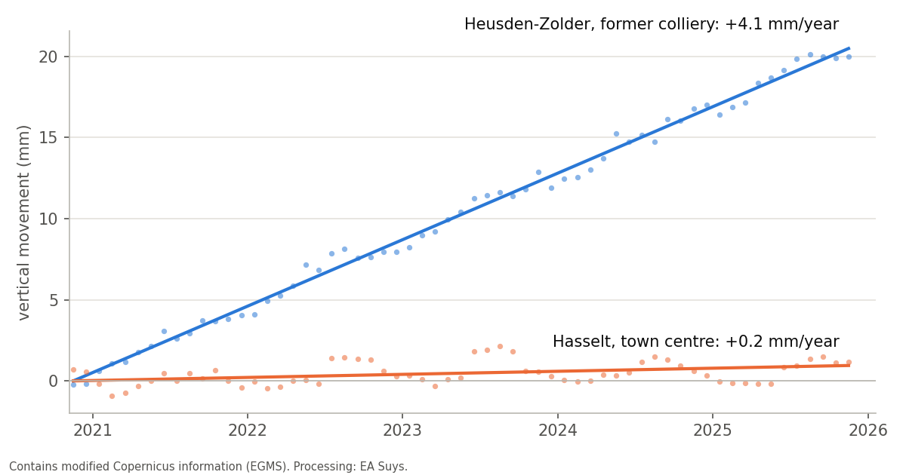

Is your building moving? Satellites have been measuring it since 2020
Cracks in a façade, works next door, an old settlement in a church: the same question keeps coming back. Is something moving now, or is it old damage? European satellite measurements can often answer that, before a single survey point has been fixed to the wall.
Millimetres from space
The Sentinel-1 satellites of the European Copernicus programme scan Europe with radar every week or two. The European Ground Motion Service (EGMS) turns those images into time series: for millions of fixed points, such as roofs, façades and paving, it shows how far they have moved since December 2020, to the millimetre.
We select the points on and around the building, combine the images from different viewing directions into a vertical movement, and compare the building with its street and its surroundings. That difference is what matters: a whole district that sinks or rises evenly does little to a building. A building that moves differently from its neighbours deserves attention.
An example: the Limburg coal basin
Since the coal mines closed, mine water is no longer pumped out. The water is rising again and the ground rises with it. This is well documented in scientific research (Declercq et al., 2023), which makes it a good test for our analysis.
- Heusden-Zolder, former colliery: the ground rises about 4 mm a year, some 2 cm in five years, steadily.
- Beringen, Maasmechelen and Genk (C-Mine): 2 to 3 mm a year.
- Hasselt town centre, south of the coal basin: 0.2 mm a year, practically stable.
The measurements from different viewing directions give the same picture, and the pattern matches the published research.

What the measurements show, and what they do not
- Per street or per large building: a terraced house usually gets only a handful of measurement points. A 50 m stretch of street easily has 50 or more, a church or a hall several dozen. The reliable answer is therefore at the level of the street or of a large building.
- Precision: we know the trend of a street or a large building to a few tenths of a millimetre per year. Where the viewing directions disagree, we use a wider margin of error.
- No substitute for measurements on site: the points lie mostly on roofs and façades, not on the foundation. The series currently runs from December 2020 to November 2025. A condition survey or monitoring during works remains necessary.
What does this mean for your project?
- Before works nearby: a documented baseline. Was the building or the street already moving before the works started?
- Cracks in an existing or heritage building: is the movement still active, or is it an old settlement?
- Renovation or change of use: does the building move differently from its surroundings?
We include this check in our structural studies. Questions about a specific building? Mail info@easuys.be.